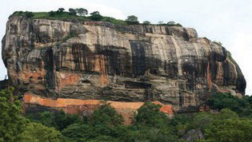

(d) Residual
Residual Mountains are formed because of weathering and erosion of weaker rocks of the already existing mountains, leaving behind resistant rocks (Figure 4.7). The remaining resistant rocks are known as residual mountains or mountains of denudation. Examples of residual mountains include the Sekenke Hills of Singida in Tanzania, the Ahaggar Mountains of Central Sahara and the Adamawa Mountains of Eastern Nigeria.

Rift valleys
A rift valley is a long narrow deep and steep-sided depression between parallel faults on the earth’s surface. They are formed through tensional or compressional forces when the ground between two parallel faults sinks. The walls of rift valleys form escarpments, which is an elongated steep slope at the edge of an upland area and gentle slope on the other side.
The Great East African Rift Valley is the longest valley in the world. It stretches from Jordan, through the Red sea, Ethiopia, Kenya and Tanzania to lower Zambezi in Mozambique. In East Africa, the Great African Rift Valley has two arms, namely the eastern arm and western arm. The eastern arm is occupied by lakes Turkana, Magadi, Eyasi, Natron and Manyara. The western arm is occupied by lakes Nyasa, Rukwa, Tanganyika, Kivu, Albert and Edward (Figure 4.8). Another rift valley is the Rhine valley, which is found between the Vosges Mountains in France and Black Forest mountains in Germany.